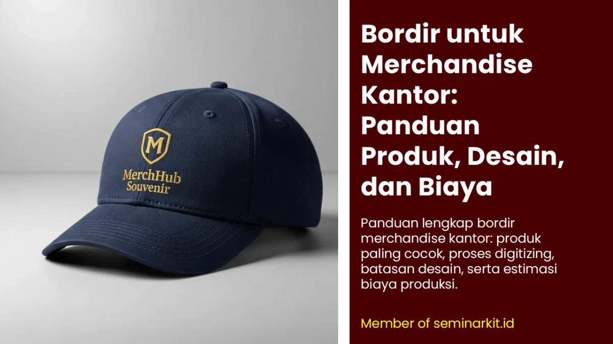
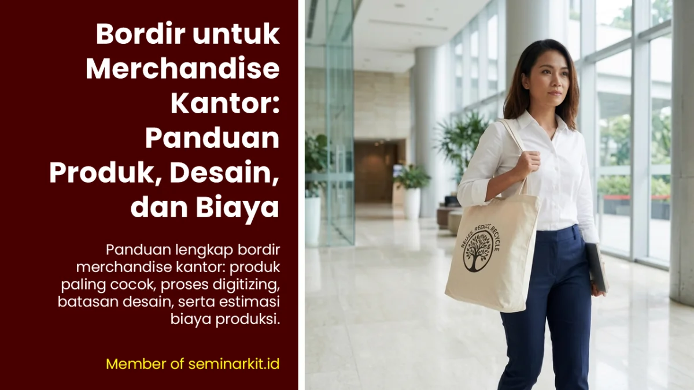

Di antara semua teknik branding untuk souvenir kantor, bordir adalah yang paling memberikan kesan "eksklusif" secara instan. Saat seseorang memegang polo shirt korporat dengan logo perusahaan yang dibordir di dada kirinya, ada rasa kualitas yang berbeda dibandingkan logo yang hanya dicetak - ada tekstur, ada dimensi, ada kesan bahwa ini bukan barang biasa.
Inilah mengapa bordir menjadi pilihan utama untuk polo shirt seragam event perusahaan, topi promosi eksklusif, tas kantor branded, dan merchandise fashion korporat yang ingin tampil premium.
Namun bordir juga memiliki batasan teknis yang perlu dipahami sebelum Anda memesan. Artikel ini menjelaskan semuanya secara praktis.
Produk Merchandise Kantor yang Paling Cocok untuk Bordir
Bordir bekerja terbaik pada material kain dengan ketebalan sedang hingga tebal:
Polo shirt piqué (lacoste): Material wajib untuk bordir. Ketebalan dan tekstur piqué memberikan dasar yang sempurna. Ini adalah kombinasi paling populer di souvenir kantor.
Jaket dan sweater: Bordir di dada atau lengan jaket memberikan kesan premium yang tidak bisa dicapai sablon.
Topi (baseball cap, trucker cap): Bordir di panel depan topi adalah teknik branding standar untuk merchandise fashion korporat.
Tas kanvas dan ransel: Bordir di label atau panel depan tas memberikan sentuhan artisanal yang eksklusif.
Seragam kantor formal: Bordir nama atau logo di saku dada - tampilan profesional yang rapi.
Handuk dan produk terry: Bordir pada handuk mandi atau gym towel untuk merchandise premium atau corporate gift.
Hoodie dan crewneck: Populer untuk merchandise internal karyawan atau branded apparel untuk event perusahaan.
Proses Digitizing: Fondasi Kualitas Bordir

Sebelum mesin bordir mulai bekerja, file logo Anda harus melalui proses yang disebut digitizing - proses mengkonversi desain visual menjadi file instruksi mesin bordir (.DST, .EMB, atau .PES).
File digitizing menentukan: arah setiap jahitan, panjang jahitan, jenis stitch yang digunakan (satin stitch, fill stitch, running stitch), urutan warna benang, dan kompensasi pull (karena kain akan bergeser sedikit saat dijahit).
Digitizing yang buruk akan menghasilkan bordir yang terlihat "berantakan", distorsi, atau loop benang yang longgar. Itulah mengapa memilih vendor bordir dengan operator digitizing berpengalaman sangat penting.
Berapa Lama Proses Digitizing?
Untuk logo sederhana (1-3 warna, tanpa detail sangat halus): 1-2 hari kerja. Untuk logo kompleks dengan banyak detail dan warna: 2-4 hari kerja. Digitizing biasanya dikerjakan sekali, dan file digitizing bisa digunakan ulang untuk order berikutnya.
Jenis Stitch (Jahitan) dalam Bordir Merchandise Kantor
Satin Stitch: Jahitan rapat paralel yang mengisi area kecil hingga menengah. Hasil mengkilap dan halus. Ideal untuk teks dan elemen logo dengan lebar 2-10mm.
Fill Stitch (Tatami): Jahitan yang mengisi area lebih besar dengan pola geometris berulang. Lebih ringan dari satin stitch sehingga tidak membuat kain kaku. Ideal untuk area besar dalam logo.
Running Stitch: Jahitan garis tunggal, tipis. Digunakan untuk garis outline, detail halus, atau teks sangat kecil.
3D Foam (Raised Embroidery): Busa tipis ditempatkan di bawah bordir untuk menciptakan efek tiga dimensi yang lebih menonjol. Populer untuk logo di topi.
Batasan Teknis yang Wajib Dipahami
Bordir bukan teknik yang cocok untuk semua jenis desain. Pahami batasannya:
Teks minimum: huruf di bawah 4-5mm tinggi akan sulit terbaca - benang terlalu rapat sehingga huruf "meluber"
Detail sangat halus (garis tipis < 1mm) tidak bisa direproduksi akurat dengan bordir
Gradasi warna tidak bisa dilakukan - bordir hanya bisa solid color (per benang)
Logo dengan banyak transisi warna halus (seperti logo gradasi) lebih cocok UV print
Kain sangat tipis (chiffon, organza) tidak cocok untuk bordir - bisa berlubang atau robek
Ukuran area bordir biasanya maksimal 30x30 cm per kepala mesin
Persiapan Logo untuk Bordir
Format terbaik: Vektor .AI atau .EPS dengan layer warna terpisah
Sediakan versi logo "disederhanakan" - kurangi elemen terlalu kecil yang tidak bisa dibordir
Tentukan warna benang menggunakan referensi kode benang (Madeira, Isacord, atau Pantone)
Sertakan ukuran final bordir yang diinginkan (dalam cm) - ini sangat mempengaruhi detail yang bisa dieksekusi
Untuk logo dengan tagline atau teks kecil, diskusikan dengan operator digitizing apakah teks tersebut layak untuk dibordir atau perlu disesuaikan ukurannya
| Jenis Produk | Ukuran Logo Rekomendasi | Kisaran Biaya Branding | Catatan |
|---|---|---|---|
| Polo shirt | 6-9 cm (dada kiri) | Menengah | Paling stabil untuk bordir corporate |
| Topi | 5-7 cm (panel depan) | Menengah-tinggi | Cocok untuk logo sederhana dan tegas |
| Tas kanvas | 7-10 cm | Menengah | Perhatikan ketebalan lapisan kain |
| Jaket / hoodie | 7-12 cm | Tinggi | Disarankan sample approval per warna benang |
Estimasi Biaya Bordir Merchandise Kantor


Banner promosi: klik gambar untuk langsung terhubung ke WhatsApp tim sales.
FAQ Seputar Topik Ini
Apa itu digitizing dalam proses bordir?
Digitizing adalah proses mengubah logo menjadi instruksi jahitan mesin agar bentuk dan urutan benang bisa dieksekusi akurat.
Mengapa teks kecil sering bermasalah saat dibordir?
Benang memiliki batas ketebalan sehingga teks terlalu kecil mudah melebur dan kehilangan keterbacaan.
Apakah bordir cocok untuk logo gradasi?
Tidak ideal. Bordir bekerja paling baik untuk warna solid dengan bentuk yang jelas dan tidak terlalu detail.
Kapan bordir lebih baik dibanding sablon?
Bordir lebih tepat ketika targetnya kesan premium, tekstur eksklusif, dan daya tahan tinggi pada produk tekstil.